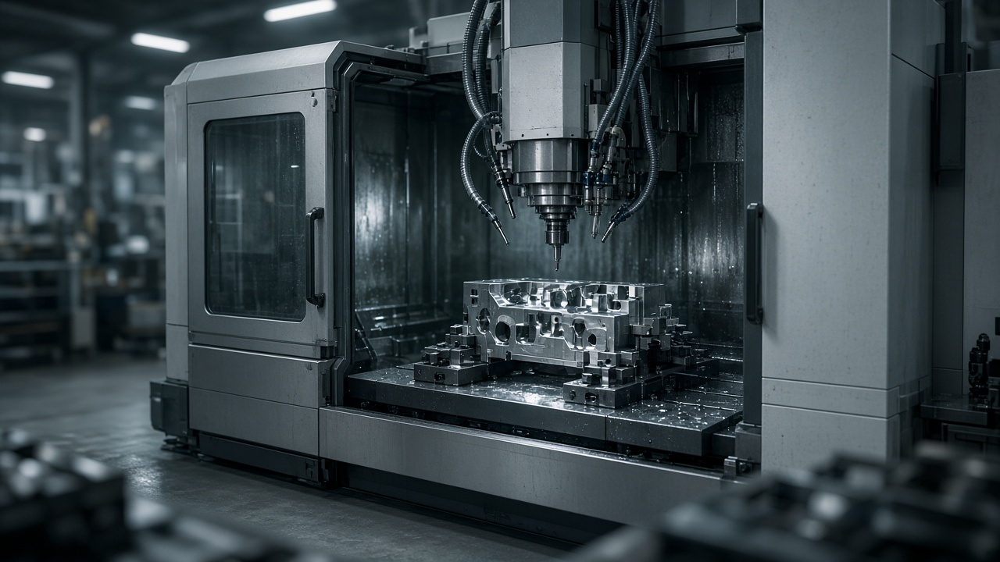
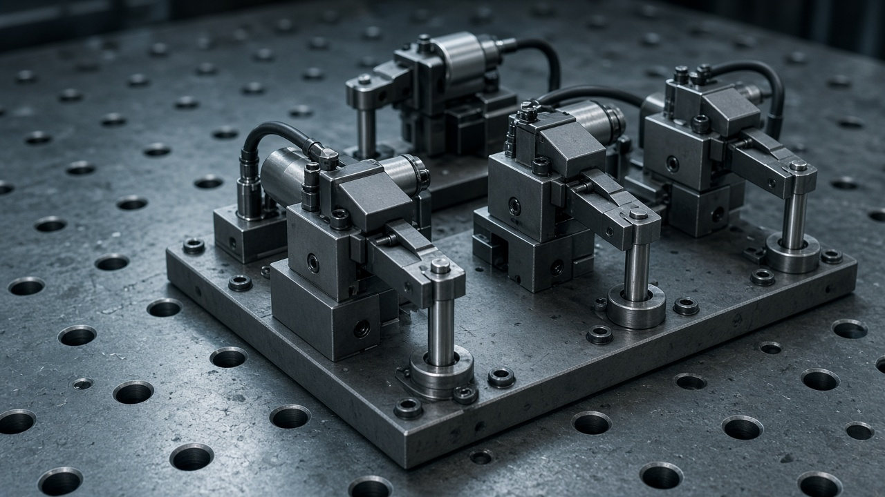
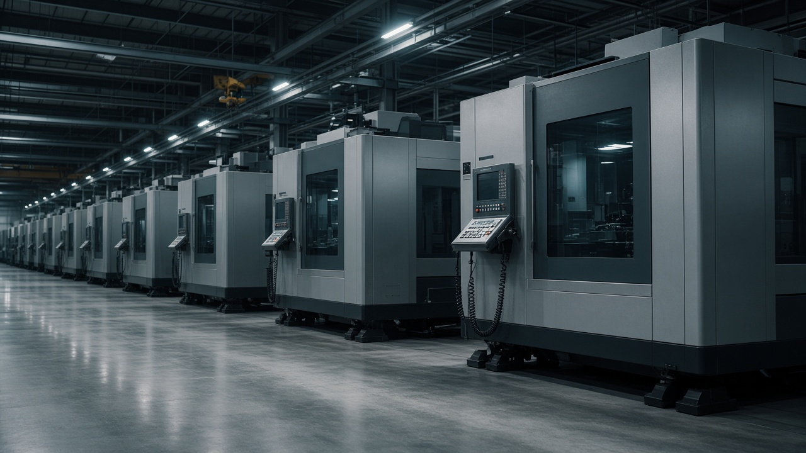

CNC machine design
Turning and machining centres, sub-systems, spindles and production-ready machine layouts.
Machine architecture and NPDMechanical design · CNC and fixture engineering
I design CNC machines, fixtures and automation systems, from early concept through manufacturing release.

Machines Fixtures Automation New product development
Practical engineering across machinery, tooling, analysis and production delivery.
Turning and machining centres, sub-systems, spindles and production-ready machine layouts.
Machine architecture and NPDHydraulic, pneumatic, modular and dedicated tooling for automotive and industrial parts.
GD&T and manufacturabilityFEA-based stress, deformation, modal analysis and rigidity checks before manufacture.
SolidWorks SimulationRobot-machine interfaces, pallet changers, automatic tool changers and integrated cells.
Cross-functional project deliveryAlso: Cutting-tool optimization, project planning, customer proposals and cost-reduction initiatives.
Selected engineering work

Hydraulic fixturing
Quick-change clamping for eight brake caliper models, cutting changeover time from 45 minutes to 8.
Automation
Designed an automatic pallet transfer mechanism to coordinate CNC machining centres.

Turnkey machining
Four setups across three machines for thin-wall stainless components, with vibration control and automated transfer.
Selected machine, fixture and automation work
Multi-spindle configurations developed to increase machining productivity.
Automatic tool-changing system designed and validated for CNC machining centres.
Multi-variant fixture with part-seating checks for precise axle machining.
Four-sided fixture arranged for high-volume machining in a single pallet load.
Automated tilt mechanism for angled drilling, integrated with conveyor transfer.
Five-machine process with common datums, automated loading and coolant flushing.
Non-marring collet clamping to preserve finished bearing surfaces.
One modular fixture base designed to accommodate four swing arm variants.
Coordinated handling concept to automate part movement across CNC machines.
Hands-on machining experience informs every design review and production decision.
View full résuméDeputy Manager, Design and Development · Leads 10 engineers across machine design, automation, customer proposals and cross-functional project delivery.
Associate, Ball Product Design · Bearing components and engineering support for global product lines.
Senior Engineer / Executive, Fixture Design · Hydraulic and pneumatic fixtures for automotive and industrial production.
Shift In-Charge, CNC Production · Production planning, machining programs and aerospace fixtures.
CNC Operator, Vertical Machining Centre · Precision machining and practical CNC process experience.
SolidWorks, CREO / Pro-E, Unigraphics / NX, CATIA, Solid Edge, AutoCAD
SolidWorks Simulation, FEA, stress and modal analysis, MasterCAM
SAP S/4HANA, Profit Plus, Autodesk Vault, Teamcenter, Microsoft Office and Project
IGNOU · JSSATE, Bangalore
Kannada English Hindi Tamil Telugu
Represented Ace Designers at JIMTOF in Tokyo and TIMTOS in Taipei.